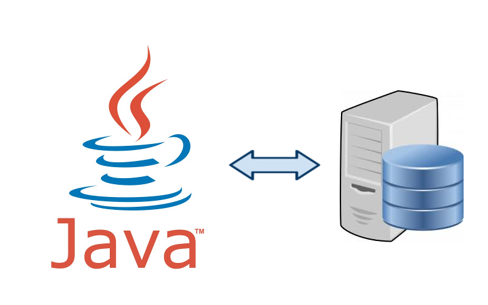

Omet navegació
Accés a Dades
Tema 4: Bases de Dades Relacionals
1 - Les Bases de Dades Relacionals
2 - El desfasament Objecte-Relacional
3 - Connexió a les BD: Connectors
3.1 - ODBC
3.2 - JDBC
4 - Perspectiva de Desenvolupament de Bases de Dades en Eclipse
5 - Iniciació a l'API JDBC
5.1 - Càrrega de controladors
5.2 - Establiment de la connexió
5.3 - Peticions bàsiques
5.4 - Exemple
6 - JDBC avançat
6.1 - Accés a les Meta Dades
6.2 - ResultSets que poden avançar cap avant i cap arrere
6.3 - Tractament d'errors en aplicacions JDBC
6.4 - Transaccions
6.5 - Millora de rendiment
Exercicis
Següent
»
Tema 4: Bases de Dades Relacionals

Següent
»
Llicenciat sota la
Llicència Creative Commons Reconeixement CompartirIgual 2.5